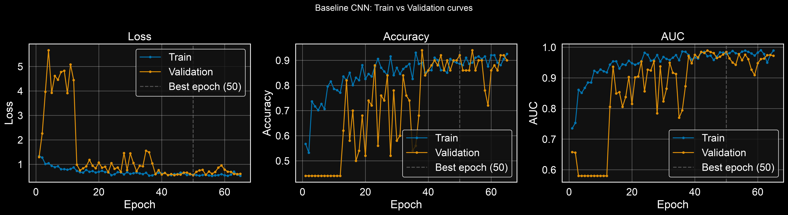
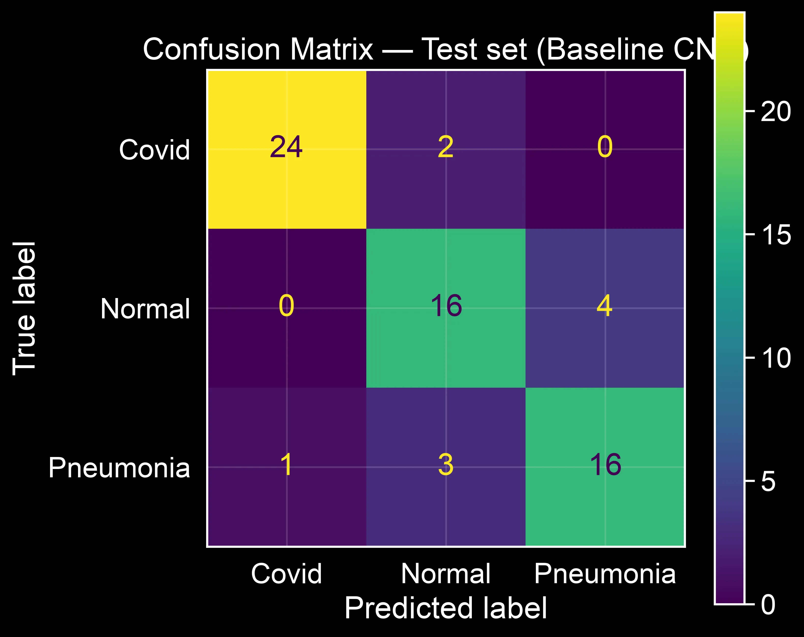

The task and why it is harder than it looks
The goal is to classify chest X-rays into three categories: Covid, Normal, and Pneumonia. Three classes sounds manageable until you look at what distinguishes them. Covid and viral Pneumonia can produce nearly identical opacities on an X-ray. Normal lungs vary considerably depending on the patient's size, age, and imaging conditions. A model that scores well can still be picking up the wrong signal: a scanner border, an annotation mark, or a systematic difference in how each class of image was captured rather than anything in the lung tissue itself. Therefore, a baseline should always aim to perform well to establish a good starting point. However, it is equally important to also examine the features on which the model based its performance.
A neural model is useful in a medical context only if its predictions are both accurate and explainable. Accurate means low error rates across all three classes, not just on average. Explainable means you can inspect which regions of the image drove each decision. Without that second layer, a good aggregate score can hide a model that uses shortcuts.
The most important lesson of this project was not how to build a classifier. It was how a convincing metric might stop being convincing once you inspect what the model is actually using.
This article covers the full arc of Part 1: the decisions that shaped the baseline CNN, the training process, and what the numbers reveal when you look beyond aggregate accuracy. Part 2 covers the explainability part.
The dataset
Before writing any model code, I looked at the dataset. For classification tasks, the first thing to check is class imbalance (see Figure 1). If one class has five times more samples than another, the model will learn to favour it, because predicting the majority class more often produces a lower loss even when the model is wrong on the minority classes.

The dataset is not badly skewed, and some imbalance exists albeit moderate. Rather than resampling or generating synthetic images, I addressed it through class weights during training. More on that a bit later. First I would like to explain the approach I followed.
Building the baseline with a custom CNN
The first question in a classification project is: what is a reasonable starting point? A common approach is transfer learning, where you start with a network pretrained on millions of images and fine-tune it for your task. However, for this project I deliberately chose a different path: a small custom CNN trained from scratch. The reason is downstream interpretability.
Later in this series, I will use Grad-CAM to visualise which regions of each X-ray the model focuses on when making its decisions. Pretrained backbones like EfficientNet use aggressive downsampling and compound scaling that produce blurry, low-resolution localisation maps at the final convolutional layer. A shallower, simpler architecture preserves a cleaner spatial correspondence between its learned feature maps and the input image, which makes the Grad-CAM analysis in Part 2 more interpretable. The trade-off is that without pretrained weights, the model has to learn everything from this small dataset alone, and will likely achieve lower raw accuracy than a transfer-learning approach would. That is an expected and accepted cost.
Data pipeline
Training pipeline
ImageDataGenerator loads images from disk and applies augmentation on the fly.
The augmentations are small because an X-ray in most of the cases does not have very diverse outputs.
For instance, I applied rotations up to 4.5 degrees, width and height shifts up to 10%, and zoom up to
10%. When a shift pushes pixels outside the frame, the gap fills with black
(fill_mode = "constant", cval = 0), which matches the dark background of X-rays.
The generator, reserves 20% of the training directory for validation via validation_split = 0.2,
so the remaining 80% feeds training.
Validation and test pipeline
The validation generator draws from the same directory but it is important to note that it does not apply any augmenation. The intuition is that if you configured a single generator for both subsets, training and validation, the augmentation parametres would apply to validation too, which will make the validation metric unreliable. The test generator is independent of the split entirely to avoid any potential data leakage.X-rays channels
X-rays are single-channel images which means that they should be loaded as greyscale. By doing so, we avoid the overhead of three identical colour channels and keep the input shape consistent with what the model expects.from tensorflow.keras.preprocessing.image import ImageDataGenerator
BATCH_SIZE = 8
SEED = 42
# No rescale here — a Rescaling layer inside the model handles normalisation
train_datagen = ImageDataGenerator(
validation_split=0.2,
rotation_range=4.5,
width_shift_range=0.1,
height_shift_range=0.1,
zoom_range=0.1,
fill_mode="constant",
cval=0,
)
train_data_iter = train_datagen.flow_from_directory(
directory="./Covid19-dataset/train/",
class_mode="categorical",
color_mode="grayscale",
target_size=(224, 224),
batch_size=BATCH_SIZE,
seed=SEED,
shuffle=True,
subset="training",
)
val_datagen = ImageDataGenerator(validation_split=0.2)
validation_data_iter = val_datagen.flow_from_directory(
directory="./Covid19-dataset/train/",
class_mode="categorical",
color_mode="grayscale",
target_size=(224, 224),
batch_size=BATCH_SIZE,
seed=SEED,
shuffle=False,
subset="validation",
)
test_datagen = ImageDataGenerator()
test_data_iter = test_datagen.flow_from_directory(
directory="Covid19-dataset/test/",
class_mode="categorical",
color_mode="grayscale",
target_size=(224, 224),
batch_size=BATCH_SIZE,
seed=SEED,
shuffle=False,
)
# Sanity check: pixel values must be in [0, 255], NOT [0, 1]
train_data_iter.reset()
batch_x, batch_y = next(iter(train_data_iter))
print(f"Pixel min: {batch_x.min():.2f} max: {batch_x.max():.2f}")
# Expected: min ~0.0, max ~255.0
train_data_iter.reset()Handling class imbalance with class weights
As we saw earlier, albeit moderate the dataset has unequal class counts. A model trained without correction will implicitly favour whichever class appears most often, because predicting the majority class more often reduces the loss even when the model is wrong on minority classes.
Class weights fix this by penalising minority-class errors
more than majority-class errors. During training,
each sample's contribution to the loss is scaled by its class weight,
so a misclassified sample from an underrepresented class hurts more.
Scikit-learn's compute_class_weight with class_weight="balanced"
computes the weights from the class counts automatically.
Computing class weights
from sklearn.utils.class_weight import compute_class_weight
import numpy as np
train_labels = train_data_iter.classes # integer labels, shape (N,)
class_weights_array = compute_class_weight(
class_weight="balanced",
classes=np.unique(train_labels),
y=train_labels
)
class_weight_dict = dict(enumerate(class_weights_array))
print("Class weights:", class_weight_dict)Building the model
The architecture is four convolutional blocks, each consisting of a Conv2D layer, Batch Normalisation1, a ReLU activation, and max-pooling. The filter counts double at each block: 32, 64, 128, 256. After the final convolutional block, a GlobalAveragePooling2D layer compresses each feature map into a single number. This is a deliberate choice: it preserves a clean, direct spatial correspondence between the last convolutional feature map and the class output, which is exactly what Grad-CAM relies on in Part 2. The alternative, flattening the feature maps into one long vector, would lose that spatial structure.
On top of the pooling layer sits a classification head: a Dense layer with 128 units, Batch Normalisation, and Dropout2 at 50%, finishing with a 3-class Softmax output. Since there are no pretrained weights to protect, all convolutional layers include L2 weight decay to slow down overfitting. Pixel values enter the model as raw [0, 255] integers and a Rescaling layer inside the model normalises them to [0, 1]. By placing the normalisation inside the model rather than in the data generator, the preprocessing contract is explicit and cannot be accidentally skipped or applied twice.
Model architecture
import tensorflow as tf
from tensorflow.keras import layers, models, regularizers
num_classes = len(train_data_iter.class_indices)
WEIGHT_DECAY = 1e-4
def conv_block(x, filters, name_prefix):
x = layers.Conv2D(
filters, (3, 3), padding="same",
kernel_regularizer=regularizers.l2(WEIGHT_DECAY),
name=f"{name_prefix}_conv",
)(x)
x = layers.BatchNormalization(name=f"{name_prefix}_bn")(x)
x = layers.Activation("relu", name=f"{name_prefix}_relu")(x)
x = layers.MaxPooling2D((2, 2), name=f"{name_prefix}_pool")(x)
return x
inputs = layers.Input(shape=(224, 224, 1), name="input_gray")
# Normalise [0, 255] → [0, 1] inside the model
x = layers.Rescaling(1.0 / 255.0, name="rescale_0_1")(inputs)
x = conv_block(x, 32, "block1")
x = conv_block(x, 64, "block2")
x = conv_block(x, 128, "block3")
x = conv_block(x, 256, "block4") # Grad-CAM target layer
x = layers.GlobalAveragePooling2D(name="gap")(x)
x = layers.Dense(128, activation="relu",
kernel_regularizer=regularizers.l2(WEIGHT_DECAY),
name="dense_1")(x)
x = layers.BatchNormalization(name="bn_head")(x)
x = layers.Dropout(0.5, name="dropout_head")(x)
outputs = layers.Dense(num_classes, activation="softmax", name="predictions")(x)
model = models.Model(inputs=inputs, outputs=outputs, name="CustomCNN_XRay_baseline_v2")Training
Because this CNN is trained from scratch, there are no pretrained weights to protect. This means the training process is a single run rather than the two-phase freeze-then-unfreeze approach typically used in transfer learning. All layers update from epoch one.
The loss uses label smoothing at 0.1. Rather than hard targets of 0 or 1, the model trains against soft targets (roughly 0.033 and 0.933 for a three-class problem). The model is penalised for overconfidence: it cannot reach zero loss by pushing one class probability to 1.0. This produces better-calibrated predictions and reduces overfitting on small datasets.
Three callbacks govern the training loop. Early stopping monitors validation loss with a patience of 15 epochs and restores the weights from the best epoch once patience runs out. ReduceLROnPlateau halves the learning rate if validation loss stalls for 6 epochs, down to a floor of 1e-7. ModelCheckpoint saves the best model to disk after each improvement.
Training
from tensorflow.keras import optimizers
from tensorflow.keras.callbacks import EarlyStopping, ModelCheckpoint, ReduceLROnPlateau
model.compile(
loss=tf.keras.losses.CategoricalCrossentropy(label_smoothing=0.1),
optimizer=optimizers.Adam(learning_rate=1e-3),
metrics=[
"accuracy",
tf.keras.metrics.AUC(name="auc", curve="ROC"),
],
)
callbacks = [
EarlyStopping(
monitor="val_loss",
patience=15,
restore_best_weights=True,
verbose=1,
),
ReduceLROnPlateau(
monitor="val_loss",
factor=0.5,
patience=6,
min_lr=1e-7,
verbose=1,
),
ModelCheckpoint(
"models/baseline_custom_cnn/best.keras",
monitor="val_loss",
save_best_only=True,
verbose=1,
),
]
history = model.fit(
train_data_iter,
validation_data=validation_data_iter,
epochs=150,
callbacks=callbacks,
class_weight=class_weight_dict,
verbose=1,
)Results
Early stopping triggered at epoch 65 and restored the weights from epoch 50, where validation loss was lowest. The final metrics:
Validation set: 92.0% accuracy, 0.985 AUC, 0.555 loss.
Test set: 84.8% accuracy, 0.975 AUC, 0.598 loss.
Does the model overfit?

At the restored best epoch, training accuracy (88.6%) is actually slightly lower than validation accuracy (92.0%), and training loss (0.582) is slightly higher than validation loss (0.555). This is the opposite of the typical overfitting pattern. The explanation is straightforward: during training, dropout and batch normalisation introduce noise that suppresses the training-time metrics. During validation, those layers are turned off, so the model performs at its full capacity. This asymmetry is a well-documented Keras behavior and is not a cause for concern.
The training curves do show noisy validation metrics in the early epochs, roughly epochs 1 through 40. This is expected for a small CNN learning from scratch on a few hundred images: the randomly initialised filters need time to find useful patterns, and the small validation set (only 50 images) amplifies the noise further. What matters is that both curves converge and stabilise by the time the best checkpoint is reached.
Per-class breakdown
Aggregate accuracy can be misleading when classes are imbalanced. A model that predicts the most common class more often than it should can still achieve a respectable overall score while quietly failing on the classes that matter most. The confusion matrix and per-class metrics below tell the real story.

Covid is the best-separated class: 24 out of 26 correctly identified (92.3% recall), with a precision of 96.0%. Only 2 Covid images were misclassified, both as Normal, and only 1 non-Covid image was incorrectly labelled as Covid. The model rarely misses Covid and rarely raises false alarms for it.
Normal and Pneumonia are where the difficulty lies. Of 20 true Normal images, 4 were predicted as Pneumonia. In the other direction, 3 of 20 true Pneumonia images were predicted as Normal. Both classes sit at 80.0% recall, with Normal precision at 76.2% and Pneumonia precision at 80.0%.
The pattern is clear: nearly all of the model's errors occur on the Normal–Pneumonia boundary, while Covid is cleanly separated from both other classes. This is consistent with the clinical reality. On a plain chest X-ray, distinguishing mild pneumonia opacities from a normal lung is a genuinely hard task, one where even trained radiologists show meaningful disagreement. A model reproducing this specific difficulty, rather than making random errors across all three classes, is at least learning something plausible.
One important caveat: the test set contains only 66 images, with 20 in two of the three classes. At that size, a single misclassified image shifts recall by 5 percentage points. The precise numbers (76.2% vs 80.0%) should not be treated as meaningfully different. What is robust, because it reflects a structural pattern rather than a decimal-point difference, is the finding that the model's confusion is localised to Normal vs. Pneumonia.
Why these decisions matter
Every decision in this baseline was made with two goals in mind: get the best performance a small, from-scratch CNN can deliver on this dataset, and keep the architecture compatible with the interpretability analysis that follows in Part 2.
Three decisions shaped the setup beyond the architecture itself.
- Rescaling inside the model. A Rescaling layer normalises pixel values from [0, 255] to [0, 1] as the first operation in the model graph. This makes the preprocessing contract explicit and auditable. It cannot be accidentally skipped in the data generator or applied twice.
- Class weights. The dataset has unequal class counts. Training with
class_weight_dictscales each sample's loss contribution by its class weight, so minority-class errors are penalised more heavily. Without this, the model could improve its aggregate score by biasing toward the majority class. - Label smoothing. Hard targets allow the model to drive output probabilities toward 1.0 and still reduce loss. Label smoothing at 0.1 prevents that. The model is penalised for overconfidence, which improves calibration and reduces overfitting on small datasets.
Good scores on a held-out test set are a necessary condition, not a sufficient one. The per-class breakdown already reveals that the model's difficulty is concentrated on the Normal–Pneumonia boundary. The next question is whether the model looks at the right parts of the image when it makes its decisions, or whether it is picking up on hospital artifacts, scanner borders, or other shortcuts. That is what Part 2 covers.
Comments
Have a question, disagree with an assumption, or want to suggest an improvement? Leave a comment below and I will reply.